4 Pictures of Stress
Even for \(n\) as small as four and \(p\) as small as two the dimension of the space of centered configurations is six, and there is no natural way to visualize a function of six variables. What we can do is plot stress on two-dimensional subspaces, either as a contour plot or as a perspective plot. Our two-dimensional subspaces are of the form \(\alpha X+\beta Y\), where \(X\) and \(Y\) are fixed configurations. Much of this chapter is a modified, and in some places expanded, version of De Leeuw (2016e).
Throughout we use a small example of order \(n=4\) which all dissimilarities equal. The same example has been analyzed by De Leeuw (1988), De Leeuw (1993), Trosset and Mathar (1997), and Zilinskas and Poslipskyte (2003). For this example a global minimum in two dimensions has its four points in the corners of a square. That is our \(X\), which has stress 0.0285955. Our \(Y\) is another stationary point, which has three points in the corners of an equilateral triangle and the fourth point in the center of the triangle. Its stress is 0.0669873. We column-center the configurations and scale them so that they are actually stationary points, i.e. so that \(\eta^2(X)=\rho(X)\) and \(\eta^2(Y)=\rho(Y)\). The example is chosen in such a way that there are non-zero \(\alpha\) and \(\beta\) such that \(d_{12}(\alpha X+\beta Y)=0\). In fact \(d_{12}\) is the only distance that can be made zero by a non-trivial linear combination.
Another way of looking at the two configurations is that \(X\) are four points equally spaced on a circle, and \(Y\) are three points equally spaced on a circle with the fourth point in the center of the circle. De Leeuw (1988) erroneously claims that \(Y\) is a non-isolated local minimum of stress, but Trosset and Mathar (1997) have shown there exists a descent direction at \(Y\), and thus \(Y\) is actually a saddle point. Of course the stationary points defined by \(X\) and \(Y\) are far from unique, because we can permute the four points over the corners of the square and the triangle in many ways.
4.1 Coefficient Space
Configurations as a linear combination of a number of given configurations have already been discussed in general in chapter 2, section 3 as the transformation from configuration space to coefficient space. Since we are dealing here with the special case of linear combinations of only two configurations we specialize some of these general results.
We start with \(d_{ij}^(\theta)=\theta'T_{ij}\theta\), where \(\theta\) has elements \(\alpha\) and \(\beta\), and where \(T\) is the \(2\times 2\) matrix with elements \[\begin{equation} t_{ij}:=\begin{bmatrix} \text{tr}\ X'A_{ij}X&\text{tr}\ X'A_{ij}Y\\ \text{tr}\ Y'A_{ij}X&\text{tr}\ Y'A_{ij}Y \end{bmatrix} (\#eq:pictbform) \end{equation}\]
Then
\[\begin{equation} \tilde\sigma(\theta):=1-2\ \theta'C(\theta)\theta+\theta'U\theta, \tag{4.1} \end{equation}\]
where, using \(Z(\theta)=\alpha X+\beta Y\),
\[\begin{equation} C(\theta):= \begin{bmatrix} \text{tr}\ X'B(Z(\theta))X&\text{tr}\ X'B(Z(\theta))Y\\ \text{tr}\ Y'B(Z(\theta))X&\text{tr}\ Y'B(Z(\theta))Y \end{bmatrix}, \tag{4.2} \end{equation}\]
and
\[\begin{equation} U:=\begin{bmatrix} \text{tr}\ X'VX&\text{tr}\ X'VY\\ \text{tr}\ Y'VX&\text{tr}\ Y'VY \end{bmatrix}. \tag{4.3} \end{equation}\]
We have used \(\tilde\sigma\) in equation (4.1) to distinguish stress on the two-dimensional space of coefficients from stress on the eight-dimensional space of \(4\times 2\) configurations. Thus \(\tilde\sigma(\alpha,\beta)=\sigma(\alpha X + \beta Z)\).
The gradient at \(\theta\) is
\[\begin{equation} \nabla\tilde\sigma(\theta)=U\theta-C(\theta)\theta, \tag{4.4} \end{equation}\]
and the Hessian is
\[\begin{equation} \nabla^2\tilde\sigma(\theta)=U-\mathop{\sum\sum}_{1\leq i<j\leq n} w_{ij}\frac{\delta_{ij}}{d_{ij}(\theta)}\left\{T_{ij}-\frac{T_{ij}\theta\theta'T_{ij}}{\theta'T_{ij}\theta}\right\}. \tag{4.5} \end{equation}\]
Proof. If \(B(X)X=VX\) and \(\theta=\begin{bmatrix}1&0\end{bmatrix}\) then, by equations (4.2) and (4.3),
\[\begin{equation} U-C(\theta)=\begin{bmatrix}0&0\\0&\text{tr}\ Y'(V-B(X))Y\end{bmatrix}. \tag{4.6} \end{equation}\]
Thus \((U-C(\theta))\theta=0\).
Thus each stationary point of \(\sigma\) gives a stationary point of \(\tilde\sigma\). The other way around, however, we are not so lucky.
Proof. If \(C(\theta)\theta=U\theta\) then both \(\text{tr}\ X'(V-B(Z)Z)=0\) and \(\text{tr}\ Y'(V-B(Z))Z=0\). If the \(n\times 2p\) matrix \(\begin{bmatrix}X&Y\end{bmatrix}\) has rank \(n-1\) then this implies \((V-B(Z))Z=0\).
In our example the singular values of \(\begin{bmatrix}X&Y\end{bmatrix}\) are 0.4879059, 0.4333287, 0.2242285, 1.4867245^{-17} and thus there is a one-one correspondence between stationary points of \(\sigma\) and \(\tilde\sigma\).
Theorem 4.3 If \(B(X)X=VX\) and \(\theta=\begin{bmatrix}1&0\end{bmatrix}\) then
- If \(\text{tr}\ Y'(V-B(X))Y > 0\) then \(\sigma\) has a local minimum at theta.
- If \(\sigma\) has a saddle point at \(\theta\) then \(\text{tr}\ Y'(V-B(X))Y < 0\).
Proof. Suppose \(B(X)X=VX\) and \(\theta=\begin{bmatrix}1&0\end{bmatrix}\). Then, from (4.5) and (4.6), \[ \nabla^2\sigma(\theta)=\begin{bmatrix}0&0\\0&\text{tr}\ Y'(V-B(X))Y\end{bmatrix}+\mathop{\sum\sum}_{1\leq i<j\leq n} w_{ij}\frac{\delta_{ij}}{d_{ij}(\theta)}\frac{T_{ij}\theta\theta'T_{ij}}{\theta'T_{ij}\theta}. \]
In our example \(\text{tr}\ X'(V-B(Y))X\) is -0.1502768 and \(\text{tr}\ Y'(V-B(X))Y\) is -0.0533599.
4.2 Global Perspective
We first make a global perspective plot, over the range \((-2.5,+2.5)\).
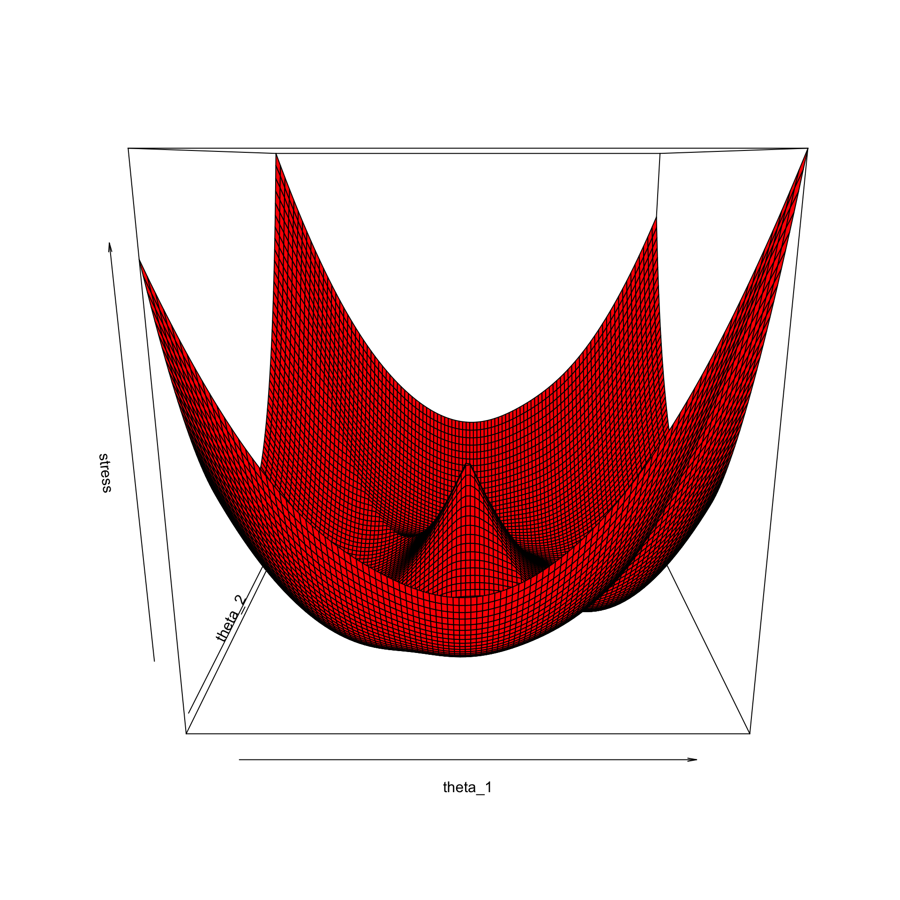
Figure 4.1: Global Perspective
We see the symmetry, following from the fact that stress is even. We also see the local maximum at the origin, where stress is not differentiable. Also note the ridge, where \(d_{12}(\theta)=0\) and where stress is not differentiable either. The ridge shows nicely that on rays emanating from the origin stress is a convex quadratic. Also, far away from the origin, stress globally behaves very much like a convex quadratic (except for the ridge). Clearly local minima must be found in the valleys surrounding the small mountain at the origin, all within the sphere with radius \(\sqrt{2}\).
4.3 Global Contour
Figure 4.1 is a contour plot of stress over \((-2,+2)\otimes(-2,+2)\). The red line is \(\{\theta\mid d_{12}(\theta) = 0\}\). The blue line has the minimum of the convex quadratic on each of the rays through the origin. Thus all local minima, and in fact all stationary points, are on the blue line. Note that the plot uses \(\theta\) to define the coordinate axes, not \(\gamma=(\alpha,\beta)\). Thus there are no stationary points at \((0,1)\) and \((1,0)\), but at the corresponding points (1.3938469, 0) and (1.0406404, 0.8849253) in the \(\theta\) coordinates (and, of course, at their mirror images).
Besides the single local maximum at the origin, it turns out that in this example there are five pairs of stationary points. Or, more precisely, I have not been able to find more than five. Each stationary point \(\theta\) has a mirror image \(-\theta\). Three of the five are local minima, two are saddle points. Local minima are plotted as blue points, saddle points as red points.
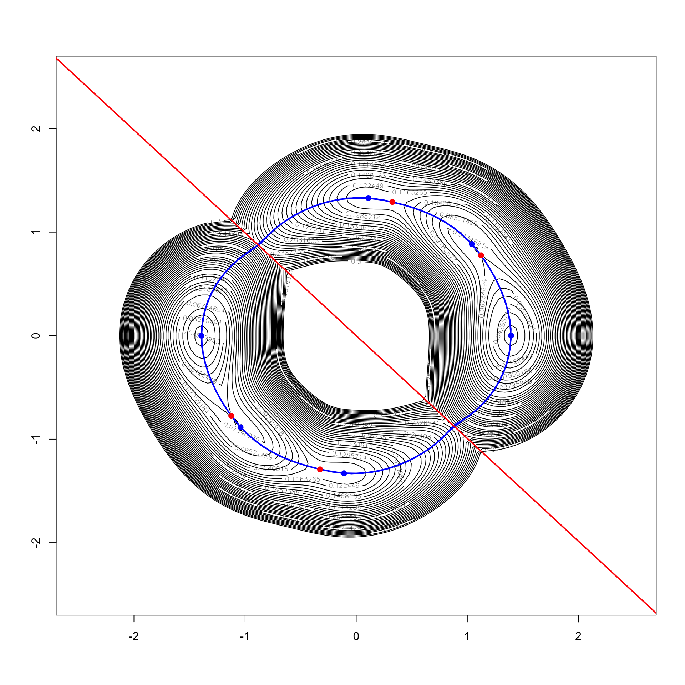
Figure 4.2: Global Contour
4.4 Stationary Points
4.4.1 First Minimum
We zoom in on the first local minimum at (1.0406404, 0.8849253). Its stress is 0.0669873, and the corresponding configuration has three points in the corners of an equilateral triangle and the fourth point in its centroid. Note that this local minimum is a saddle point in configuration space \(\mathbb{R}^{4\times 2}\) (Trosset and Mathar (1997)). The eigenvalues of \(B(\theta)\) are (1.3686346, 1) and those of the Hessian \(I-H(\theta)\) are (1, 0.0817218). The area of the contour plot around the stationary value is in figure 4.3.
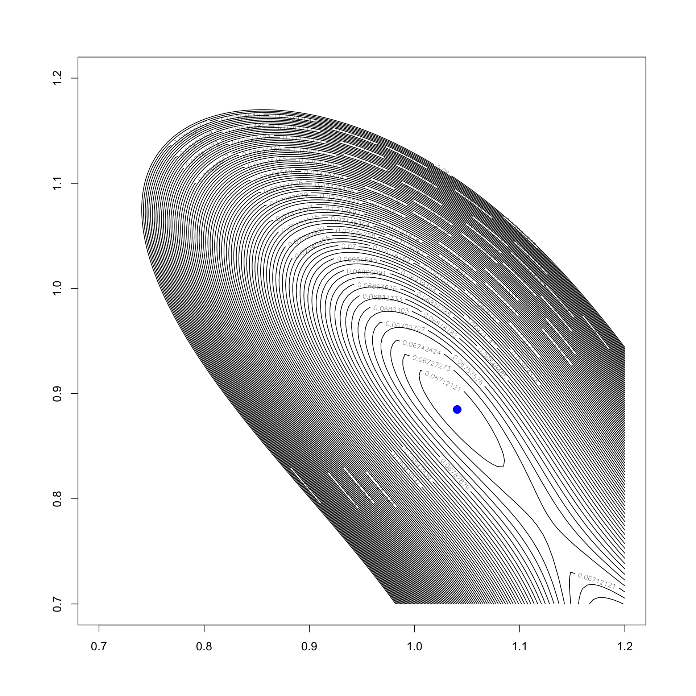
Figure 4.3: Contour Plot First Minimum
4.4.2 Second Minimum
The second local minimum (which is the global minimum) at (1.3938469, 0) has stress 0.0285955. The configuration are the four points at the corners of a square. The eigenvalues of \(B(\theta)\) are (1.1362799, 1) and those of the Hessian \(I-H(\theta)\) are (1, 0.3743105). The area of the contour plot around the stationary value is in figure 4.4.
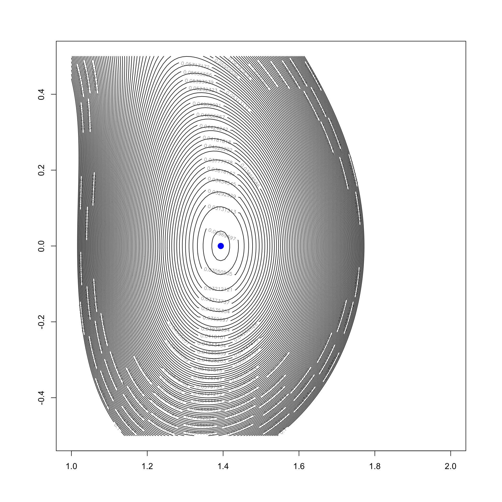
Figure 4.4: Contour Plot Second Minimum
4.4.3 Third Minimum
The third local minimum at (0.1096253, 1.3291942) has stress 0.1106125, and the corresponding configuration is in figure 4.5.
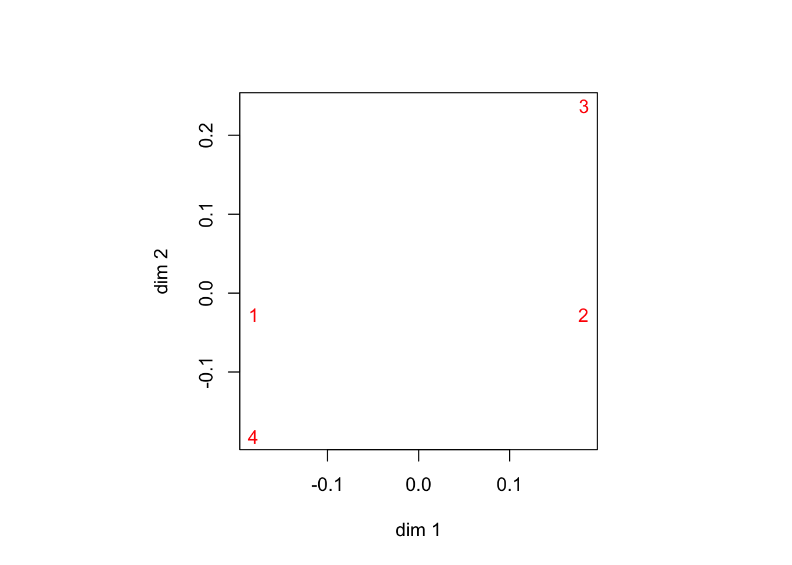
Figure 4.5: Configuration Third Minimum
The eigenvalues of \(B(\theta)\) are (1.5279386, 1) and those of the Hessian \(I-H(\theta)\) are (1, 0.2362079). The area of the contour plot around the stationary value is in figure 4.6
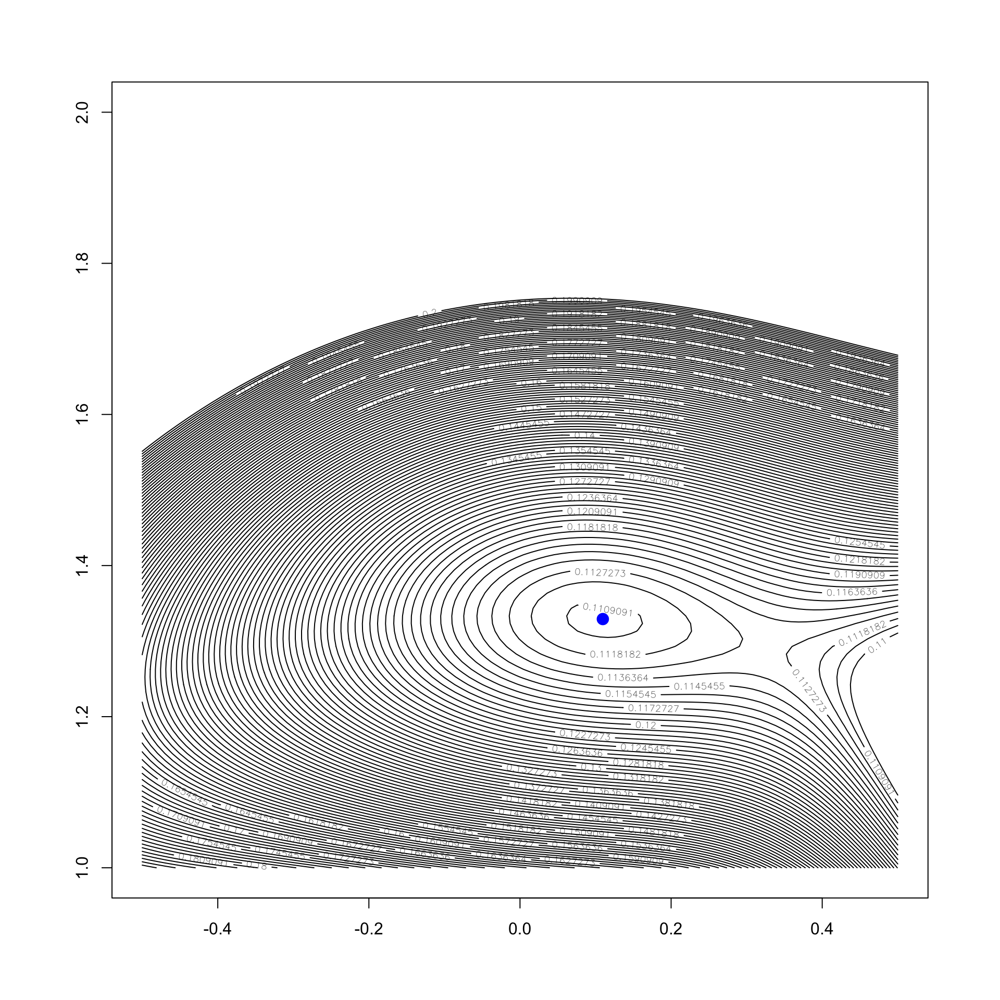
Figure 4.6: Contour Plot Third Minimum
4.4.4 First Saddle Point
The saddle point at (0.3253284, 1.2916758) has stress 0.1128675, and the corresponding configuration is in figure 4.7.
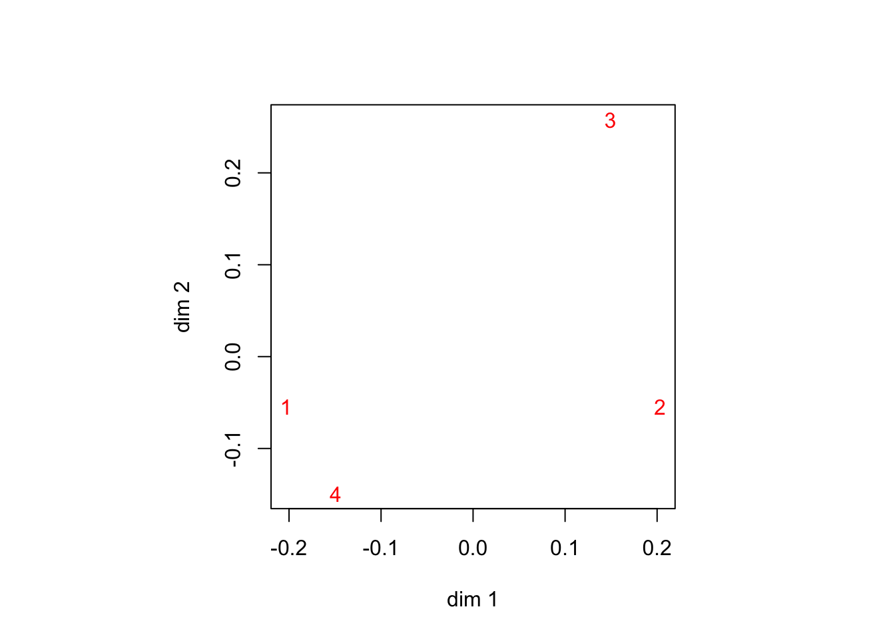
Figure 4.7: Configuration First Saddlepoint
The eigenvalues of \(B(\theta)\) are (1.7778549, 1) and those of the Hessian \(I-H(\theta)\) are (1, -0.311088). The area of the contour plot around the stationary value is in figure 4.8
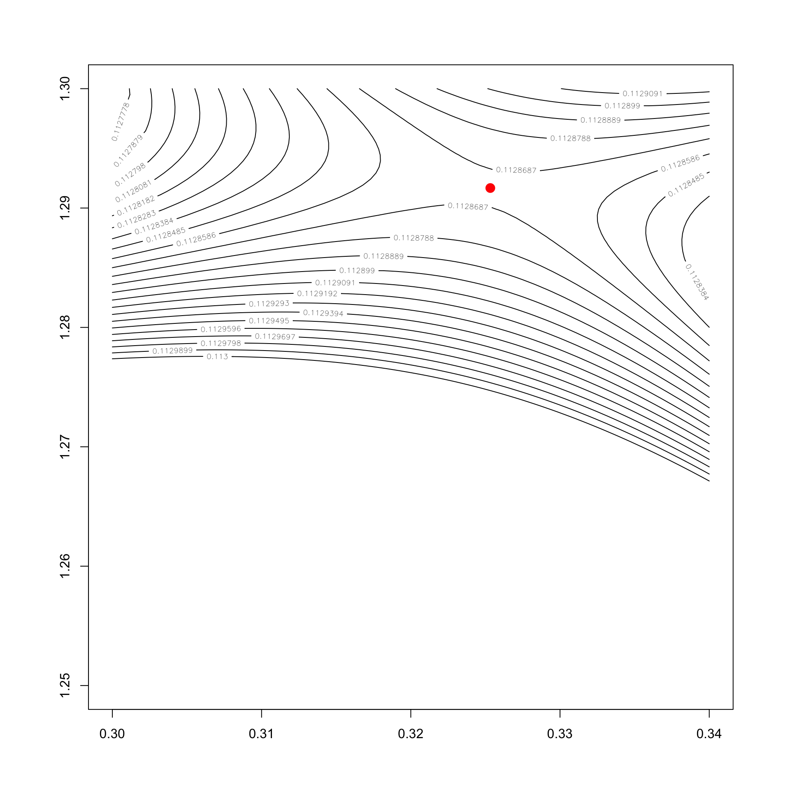
Figure 4.8: Contour First Saddlepoint
4.4.5 Second Saddle Point
The saddle point at (1.1238371, 0.7762046) has stress 0.0672483 and the corresponding configuration is in figure 4.9
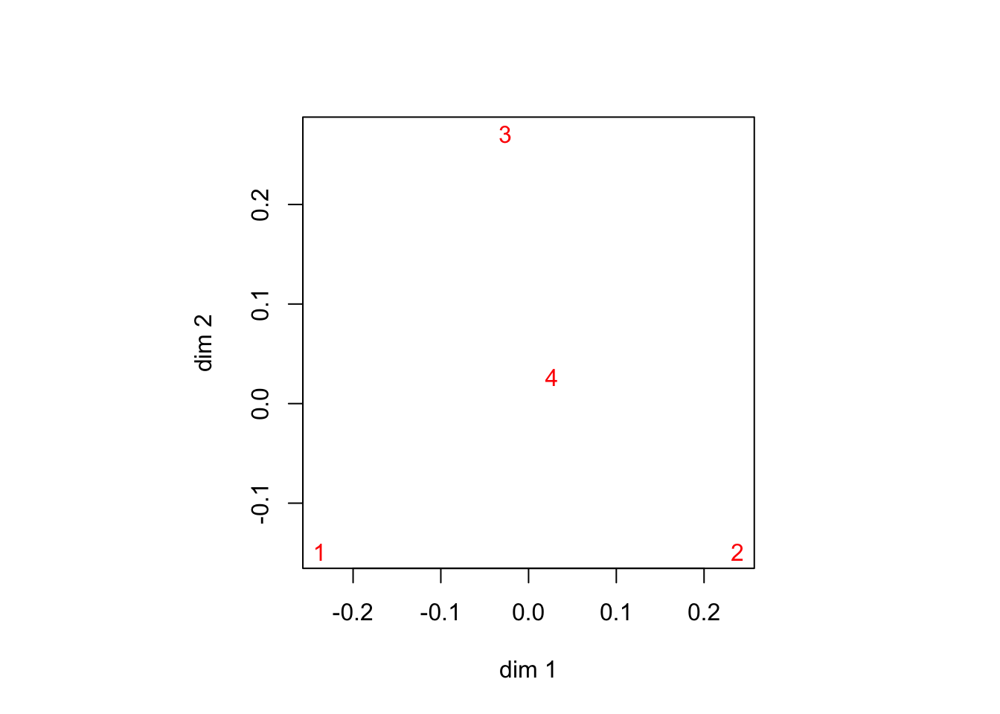
Figure 4.9: Configuration Second Saddlepoint
The eigenvalues of \(B(\theta)\) are (1.4111962, 1) and those of the Hessian \(I-H(\theta)\) are (1, -0.0841169). The area of the contour plot around the stationary value is in figure 4.10
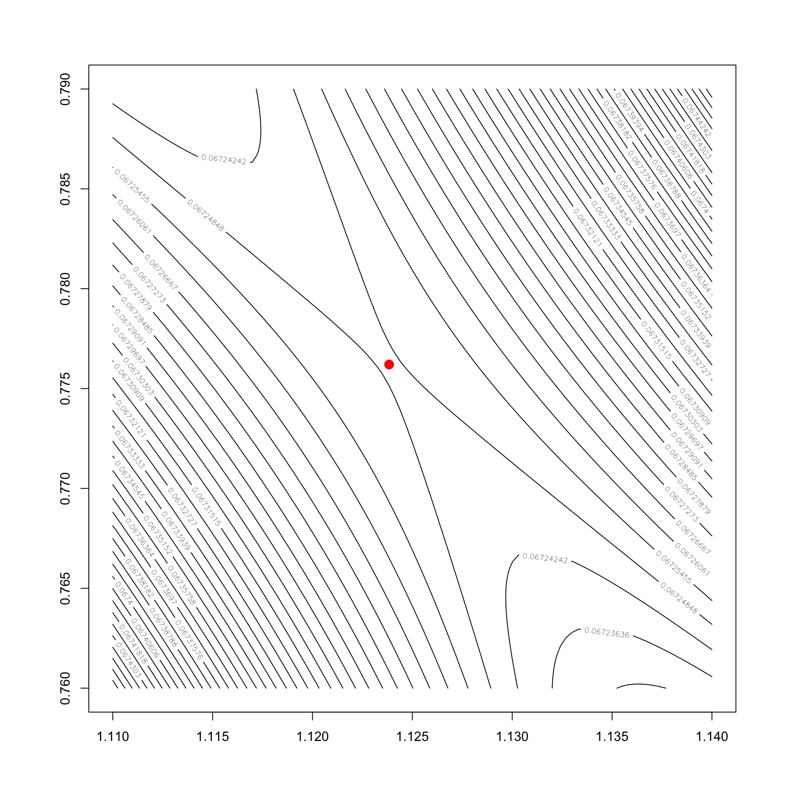
Figure 4.10: Contour Plot Second Saddlepoint
4.5 Another Look
Remember that \(\rho(\theta)=\theta'B(\theta)\theta\). Thus \(\sigma(\lambda\theta)=1-\lambda\rho(\theta)+\frac12\lambda^2\theta'\theta\), and \[ \min_\lambda\sigma(\lambda\theta)=1-\frac12\frac{\rho^2(\theta)}{\theta'\theta}. \] Thus we can minimize \(\sigma\) over \(\theta\) by maximizing \(\rho\) over the unit circle \(\mathcal{S}:=\{\theta\mid\theta'\theta=1\}\). This is a nice formulation, because \(\rho\) is norm, i.e. a homogeneous convex function of \(\theta\). Consequently we have transformed the problem from unconstrained minimization of the DC function (i.e. difference of convex functions) stress to that of maximization of a ratio of norms. In turn this is equivalent to maximization of the convex function \(\rho\) over the unit circle, or, again equivalently, over the unit ball, a compact convex set. This transform was first used in MDS by De Leeuw (1977a), partly because it made the theory developed by Robert (1967) available.
The levels sets \(\{\theta\mid\rho(\theta)=\kappa\}\) are the \(\rho\)-circles defined by the norm \(\rho\). The corresponding \(\rho\)-balls \(\{\theta\mid\rho(\theta)\leq\kappa\}\) are closed and nested convex sets containing the origin. Thus we want to find the largest \(\rho\)-circle that still intersects \(\mathcal{S}\). The similarity with the geometry of eigenvalue problems is obvious.
In our example we know that the global optimum of stress is at (1.3938469, 0), and if we project that point on the circle it becomes (1, 0). The corresponding optimal \(\rho\) is 1.3938469. Figure 4.11 gives the contourplot for \(\rho\), with the outer \(\rho\)-circle corresponding with the optimal value. The fact that the optimal value contour is disjoint from the interior of \(\mathcal{S}\) is necessary and sufficient for global optimality (Dür, Horst, and Locatelli (1998)). Notice the sharp corners in the contour plot, showing the non-diffentiability of \(\rho\) at the points where \(d_{12}(\theta)=0\). We could also look for the minimum of \(\rho\) on the unit circle, which means finding the largest \(\rho\)-circle that touches \(\mathcal{S}\) on the inside. Inspecting figure 4.11 shows that this will be a point where \(\rho\) is not differentiable, i.e. a point with \(d_{12}(\theta)=0\). This minimum \(\rho\) problem does not make much sense in the context of multidimensional scaling, however, and it not related directly to the minimization of stress.
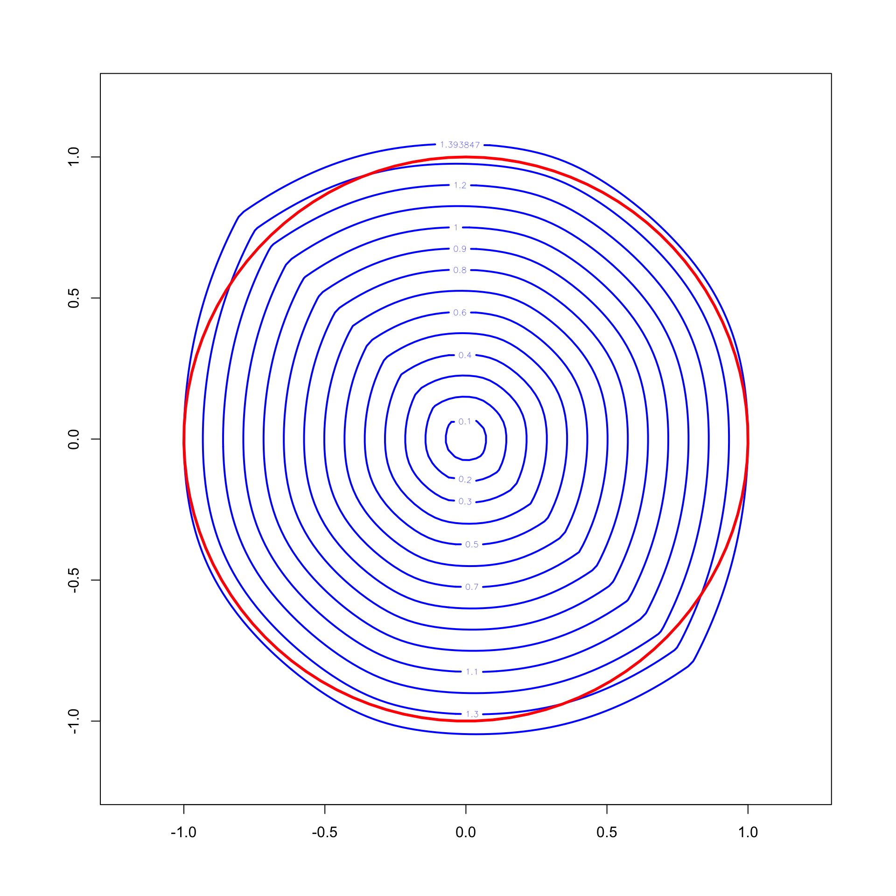
Figure 4.11: Contour Plot for Rho
4.6 A Final Look
Now that we know that the MDS problem is equivalent to maximizing \(\rho\) on the unit circle, we can use nonlinear coordinates \((\theta_1,\theta_2)=(\sin\xi,\cos\xi)\) to reduce the problem to a one-dimensional unconstrained one in, say, ``circle space’’. Thus, with the same abuse of notation as for stress, \(\rho(\xi):=\rho(\sin\xi,\cos\xi)\), and we have to maximize \(\rho\) over \(0\leq\xi\leq\pi\).
In figure 4.12 we have plotted \(\rho\) as a function of \(\eta\). There are blue vertical lines at the three local minima in coefficient space, red vertical lines at the stationary points, and a green vertical line where \(d_{12}(\xi)=0\). Note that in circle space stress has both multiple local minima and multiple local maxima.
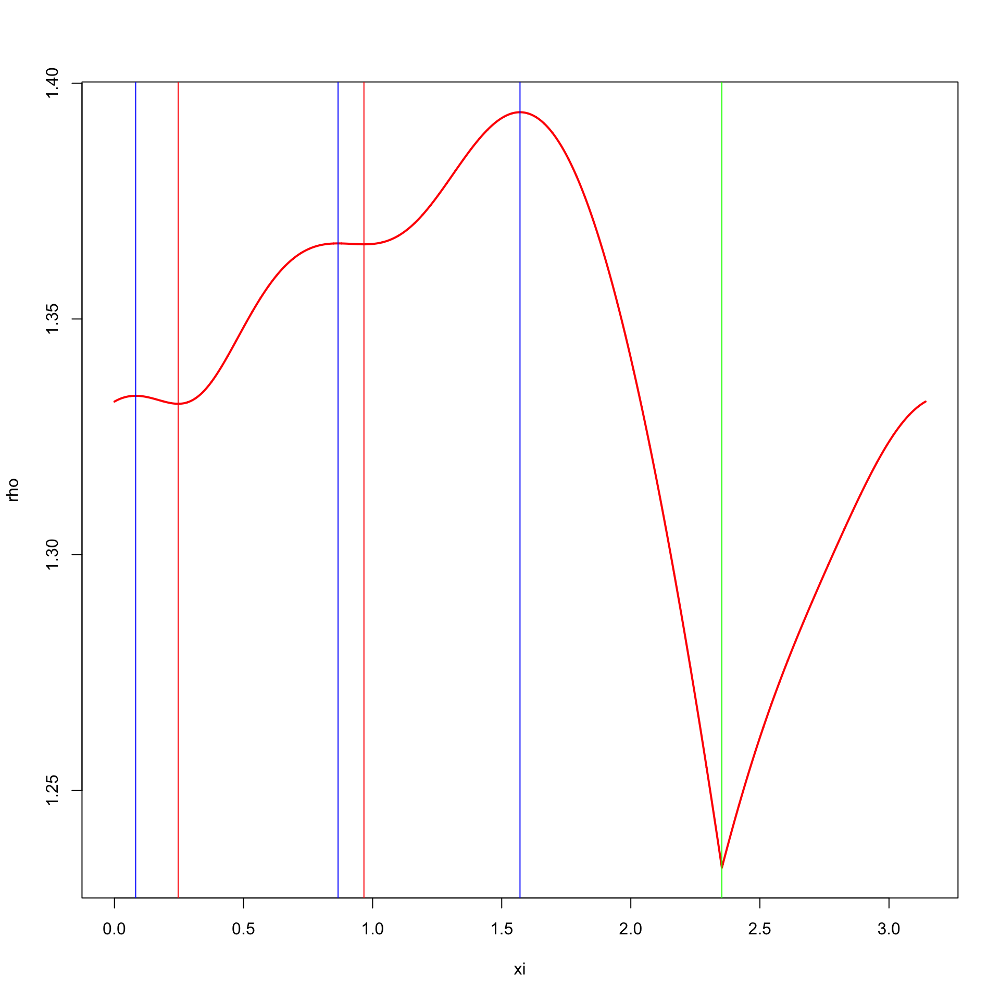
Figure 4.12: One-dimensional Rho
From lemma xxx we see that the second derivative \(\mathcal{D}^2\rho(\xi)\) is equal to \(\mathbf{tr}\ H(\xi)-\rho(\xi)\). For the three local minima in coordinate space we find second derivatives 0, 0, 0 in circle space, i.e. they are properly converted to local maxima. The two stationary points in coordinate space have second derivatives 0, 0, and are turned into local minima.
For more general cases, with a basis of \(n\) configurations, we know from Lyusternik and Schnirelmann (1934) that a continuously differentiable even function on the unit sphere in \(\mathbb{R}^n\) has at least \(n\) distinct pairs of stationary points.
4.7 Discuss
Note that we have used \(\sigma\) for three different functions. The first one with argument \(Z\) is defined on configuration space, the second one with argument \(\gamma\) on coefficient space, and the third one with argument \(\theta\) also on coefficient space. This is a slight abuse of notation, rather innocuous, but we have to keep it in mind.
From lemma xxx we see that \(\mathcal{D}\sigma(X)=\mathcal{D}\sigma(Y)=0\) then \(\mathcal{D}\sigma(1,0)=\mathcal{D}\sigma(0,1)=0\). Thus stationary points in configuration space are preserved as stationary points in coefficient space, but the reverse implication may not be true. If \(\mathcal{D}^2\sigma(X)\) and \(\mathcal{D}^2\sigma(Y)\) are positive semi-definite, then so are \(\mathcal{D}^2\sigma(1,0)\) and \(\mathcal{D}^2\sigma(0,1)\). Thus local minima are preserved. But it is entirely possible that \(\mathcal{D}^2\sigma(X)\) and/or \(\mathcal{D}^2\sigma(Y)\) are indefinite, and that \(\mathcal{D}^2\sigma(1,0)\) and/or \(\mathcal{D}^2\sigma(0,1)\) are positive semi-definite. Thus saddle points in configuration space can be mapped into local minima in coefficient space. As we will see this actually happens with \(Y\), the equilateral triangle with center, in our example.
4.8 Coordinates
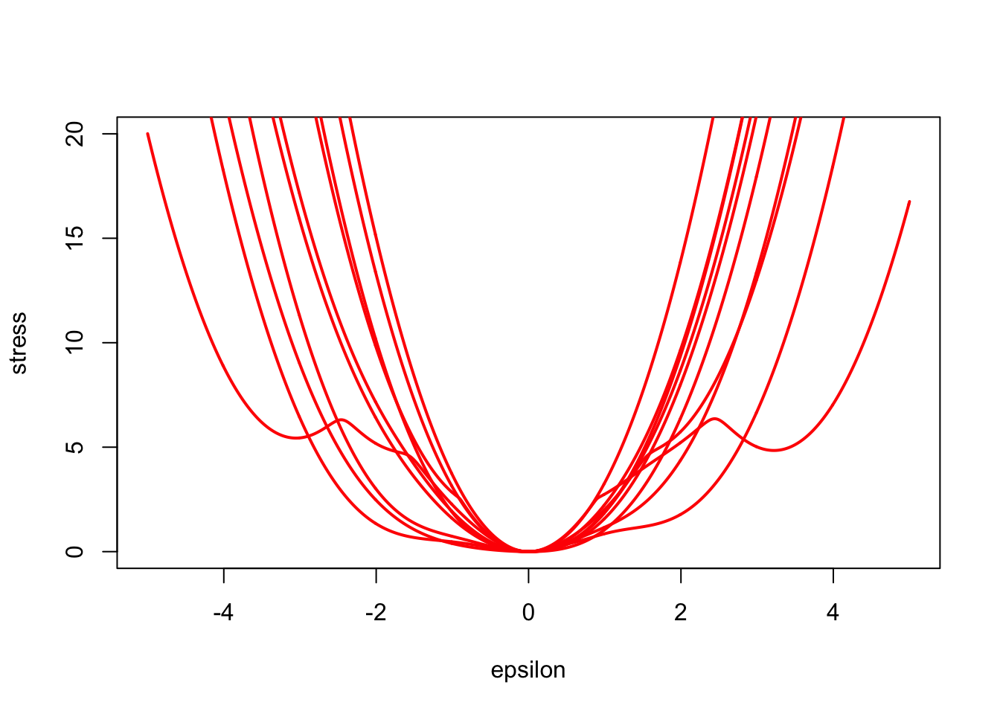
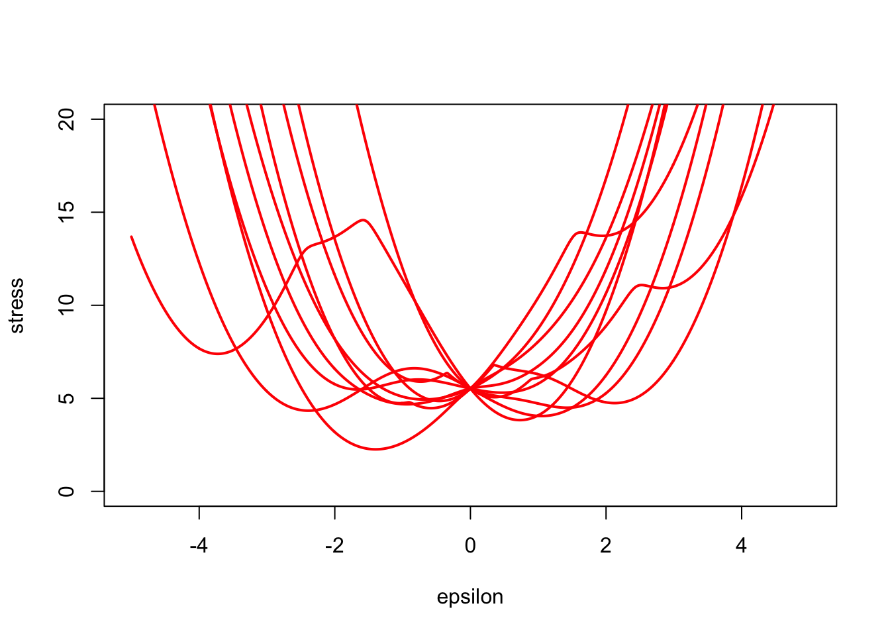
Let’s look at a small example with four points, all dissimilarities equal, and all weights equal to one. There is a local minimum with four points in the corners of a square, with stress equal to 0.0285955. And there is another local minimum with three points forming an equilateral triangle, and the fourth point in the center. This has stress 0.0669873. We can compute stress for all points of the form \(\alpha X+\beta Y\), where \(X\) and \(Y\) are the two local minima. Figure 4.13 has a contour plot of \(\sigma(\alpha,\beta)\), showing the local minima at \((1,0)\) and \((0,1)\), and the local maximum at \((0,0)\).
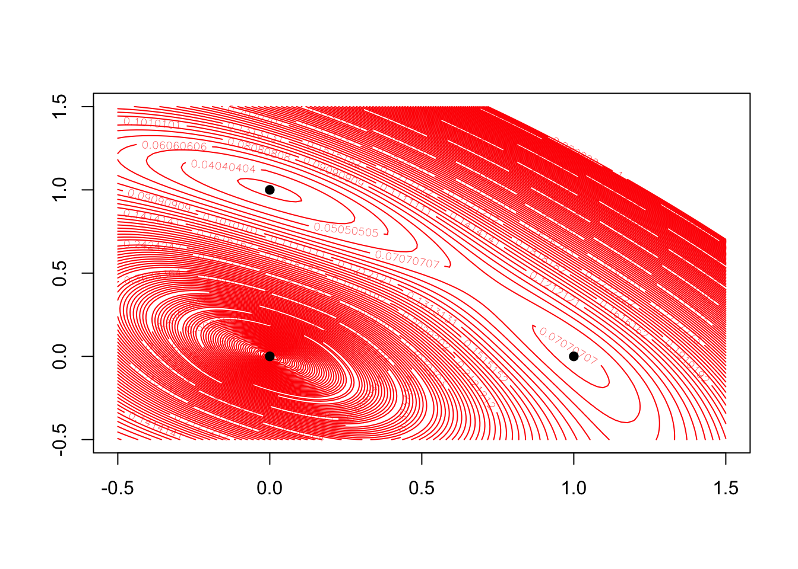
Figure 4.13: Plane spanned by two local minima, equal dissimilarities
Alternatively, we can plot stress on the line connecting \(X\) and \(Y\). Note that although stress only has a local maximum at the origin in configuration space, it can very well have local maxima if restricted to lines. In fact on a line connecting two local minima there has to be at least one local maximum.
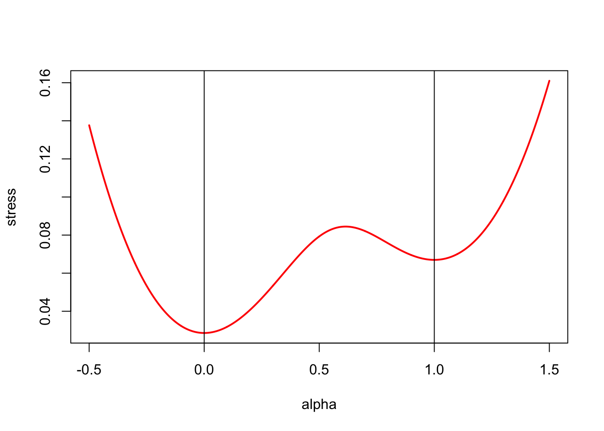
Figure 4.14: Line connecting two local minima, equal dissimilarities